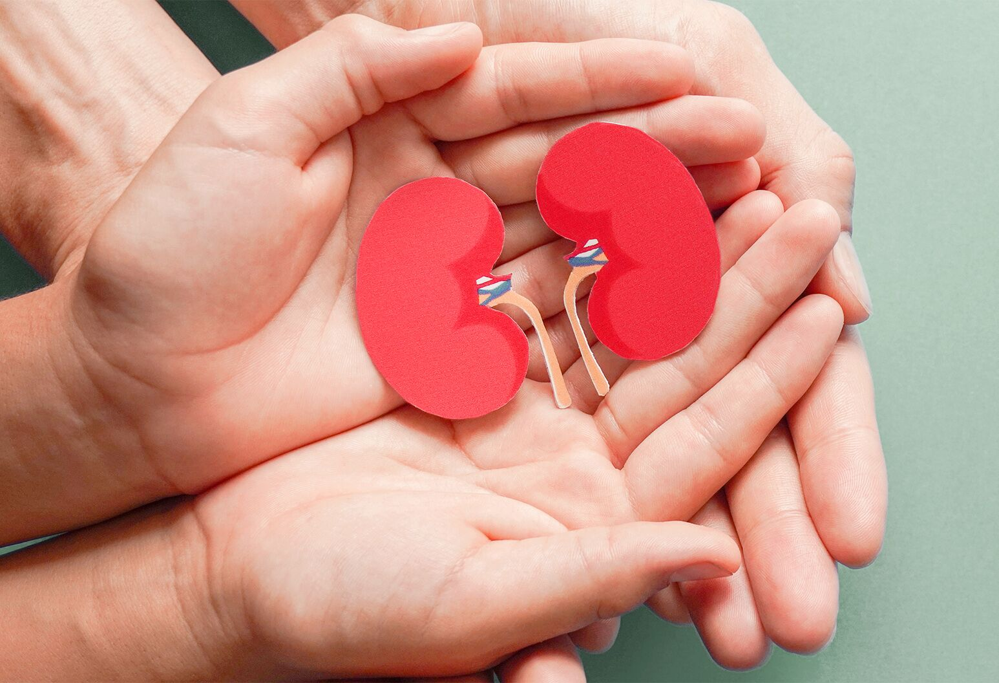
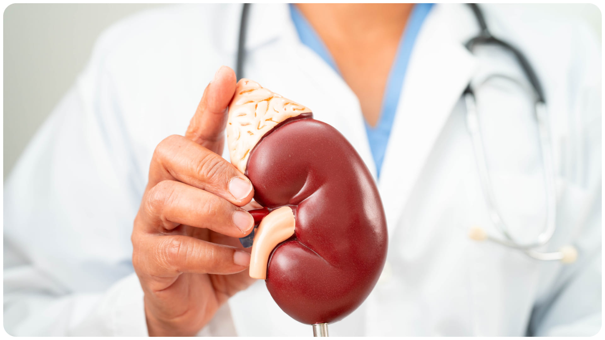

Kidney Care
Kidney care, or nephrology, focuses on the health of these two bean-shaped organs that filter your blood. Because the kidneys regulate everything from blood pressure to red blood cell production, keeping them healthy is essential for your entire body.
- Waste Removal: Filtering out toxins and excess fluid, which leave the body as urine.
- Blood Pressure Control: Releasing hormones that regulate how much your blood vessels constrict.
- Chemical Balance: Maintaining the right levels of electrolytes like sodium, potassium, and calcium.
- Red Blood Cell Support: Producing a hormone called erythropoietin that tells your bones to make blood.

